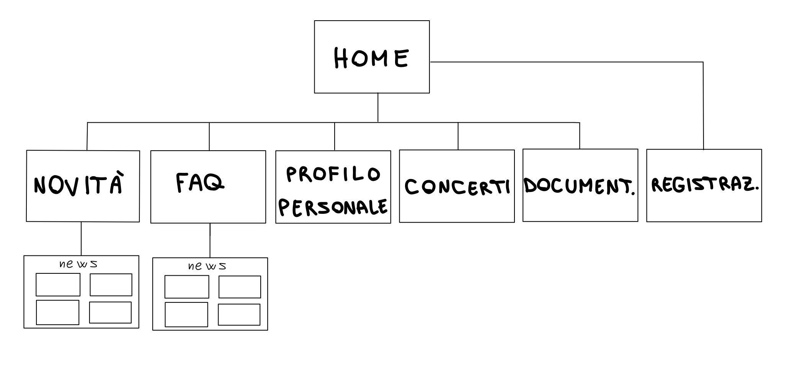
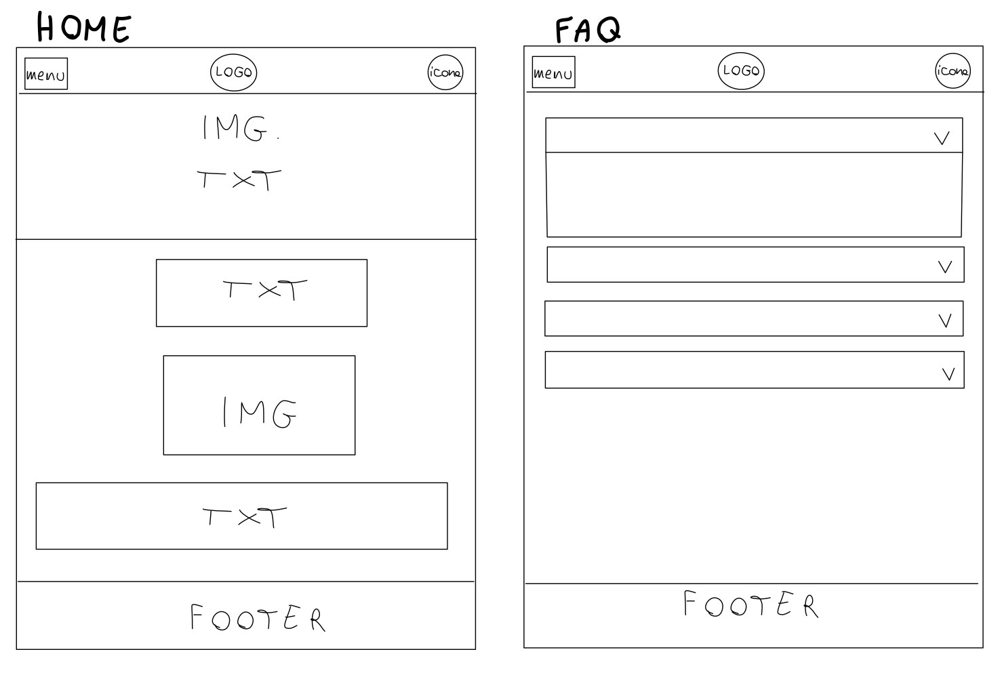

Abstract
Teencert è stato creato come progetto per il corso di Informatica Umanistica. L'obiettivo primario è mettere in contatto tra loro fan che vogliono andare allo stesso concerto, cosicché possano conoscersi e organizzarsi per partecipare insieme all'evento. Quello secondario è essere una vera e propria piattaforma di incontro tra amanti della musica e organizzatore di eventi in tutta Italia. Il target è composto da ragazzi e ragazze giovani, dai 16-17 anni ai 30. Il valore aggiunto che offre è il servizio di ricerca e chat con altri fan che vogliono partecipare ai concerti.
Project Management Plan
1.1 Obiettivi
L'obiettivo primario di Teencert è mettere in contatto tra loro fan che vogliono andare allo stesso concerto, cosicché possano conoscersi e organizzarsi per partecipare insieme all'evento.
1.2 Target
Ragazzi e ragazze giovani, dai 16-17 anni ai 30.
1.3 Competitors
2.1 Architettura del sito

2.2 Wireframe

2.3 Look and feel
Ho scelto colori chiari e neutri come bianco, grigio e nero per dare un tocco di eleganza e per far sì che l’occhio dell’utente si concentri maggiormente sul contenuto dei paragrafi e delle immagini/icone senza essere distratto o infastidito. Ho reso la piattaforma semplice, intuitiva e interessante attraverso icone, immagini, testi brevi semplici e informali, news sugli artisti del momento. Inoltre, dato il mio target, ho scelto di rendere TC adatto a device come smartphone e tablet.
3.1 Linguaggi web
Html, CSS e Javascript3.2 Strumenti
Communication Strategy
1 Backgroung
La valutazione da me fatta sugli altri siti web riguardava l’offerta di servizi. Dalla mia analisi di mercato ho constatato che non ci sono siti web che attualmente offrono il servizio di ricerca e chat con altri fan e questa loro mancanza è il punto forte del mio sito, il quale, d’altra parte, risponde a una grande richiesta di mercato, come dimostrano i gruppi facebook creati proprio per questo scopo (es. Clubsharing o Compagni di concerti CERCASI). Teencert risponde alla domanda 1 quando si tratta di organizzazione ovvero “con chi ci vado?”.
2 Obiettivi comunicativi
La prima cosa che l’utente vede è la barra di ricerca degli artisti, così da sottolineare l’obiettivo primario del sito ovvero mettere in contatto tra loro fan che vogliono andare allo stesso concerto, tuttavia ho scelto di aggiungere anche altre sezioni quali “Novità”, “I miei concerti” o “Profilo personale” in quanto c'è anche un obiettivo secondario e futuro, ovvero far diventare TC una vera e propria piattaforma su cui potersi scambiare idee sulla musica, postare le proprie cover di canzoni e soprattutto organizzare eventi targati Teencert per gli utenti in tutta Italia.
3 Targer Audience e Messaggio
Il target primario sono ragazzi e ragazze giovani, dai 16-17 anni in su, questo perché solitamente è questa la fascia d’età più flessibile e aperta a nuove conoscenze. Ma non escludo che possa esserci anche un target secondario di persone dai 25 anni in su maggiormente in grado di spostarsi per tutta Italia. I miei gruppi target sono solitamente raggiunti tramite i social media, le pubblicità e il passaparola, per questo motivo sarebbero efficaci advertising su social media come Instagram, Tik tok e Facebook; sponsorizzazioni da parte di influncer, sia del mondo della musica che non; creare una pagina social; organizzare eventi ed, infine, anche la newsletter potrebbe essere un buon metodo per dare aggiornamenti settimanali. Inoltre ho utilizzato i dati emersi dal forms sulla musica per scegliere di prendere le news dal portale online di Rolling Stones. La più grande barriera è il fatto che la persona con cui chatti è uno sconosciuto perciò non tutti si trovano a loro agio con questo, delle percentuale di persone che vogliono andare ad un concerto solo una parte si fida (o gli è concesso dai genitori) di organizzarsi con una persona conosciuta solo tramite chat. Il messaggio e obiettivo che TC si prefigge è che ragazzi e ragazze da tutta Italia possano condividere un’emozione, creare legami nuovi, fare amicizia o anche solo chiacchierare di musica con altri fan.
4 Promozione
Promuoverò il mio sito online, condividendo il link su Whatsapp, Instagram e Facebook.